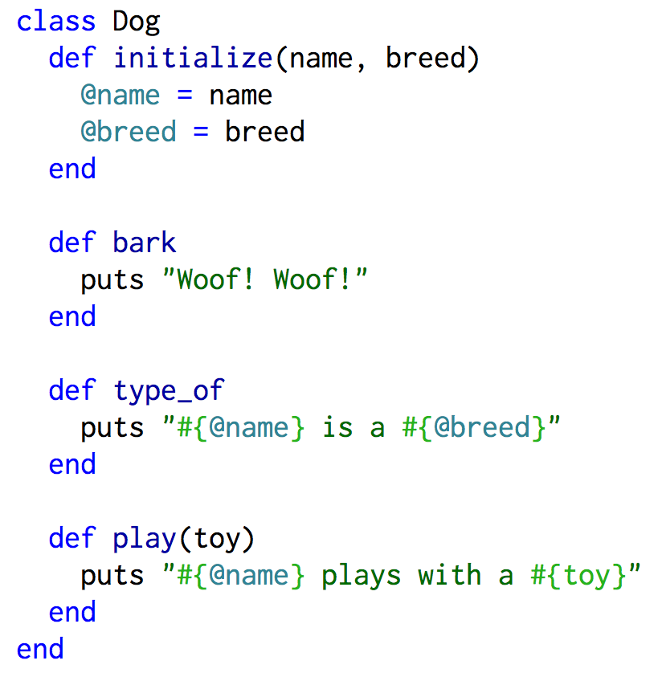
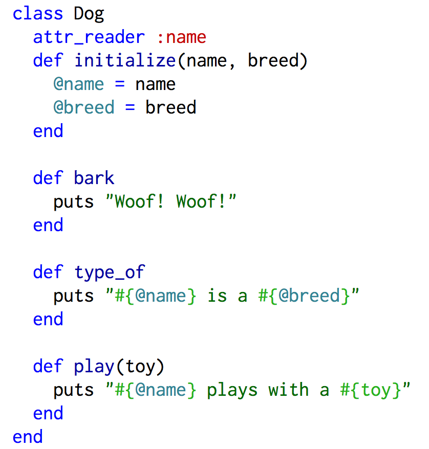
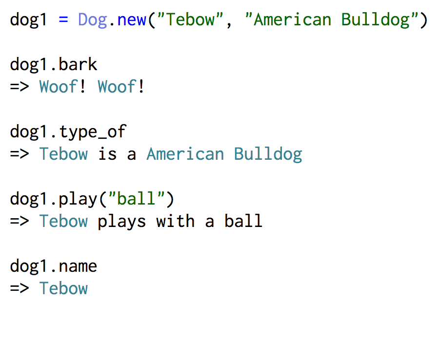

Ruby Classes
Sunday, November 29, 2015
Ruby Objects and Classes
In Ruby, every "thing" is an object including classes. When creating an object, it is part of a particular class that has specific attributes and methods available to it. Ruby allows you to make your own classes by creating a blueprint that mimics real-world objects you're trying to create in your code. Each blueprint helps you to group specific characteristics/attributes and behaviors/methods that belong to that real-world object using instance variables and methods that are unique to the class.
Creating a Class
Making a class is fairly simple, so I'll make a class that represents dogs. We know that dogs have a name and are a particular breed. We'll use the initialize method to create instance variables with the at "@" sign that will allow the information to be accessed in methods across the class. Then I'll use these variables in other methods across the class.
Access Attributes and Methods with a New Dog Object
When you as a variable name by calling Dog.new you need to pass in the arguments to be used in the initialize method. This will allow that information to be stored in the instance variables and be used in other methods across the class. To access attributes you'll need to use an attr method. I'll add attr_reader to access the name attribute. Then to access the methods you type variable_name.#method and pass any necessary arguments.
 